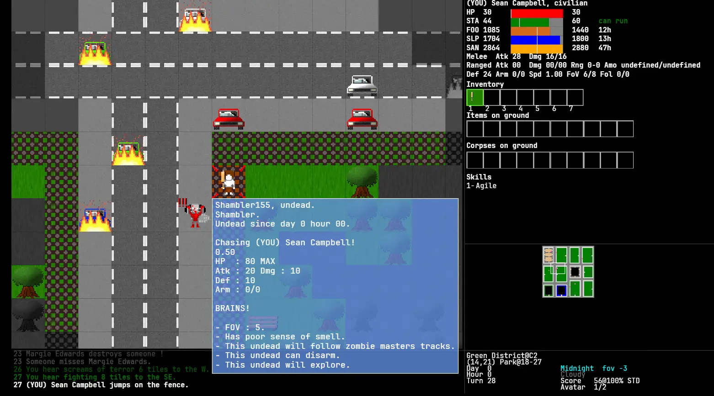
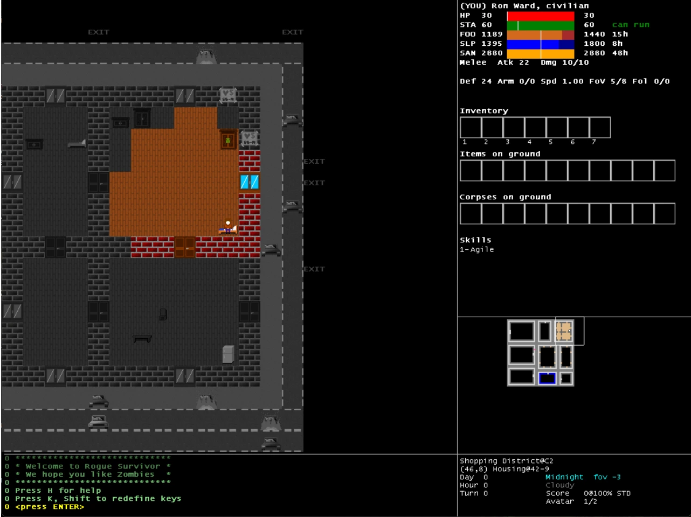
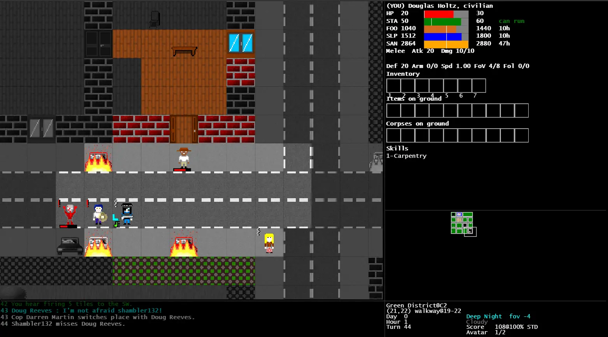
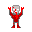

It is midnight. Something in your bedroom wants your brain.
You kicked and punched until it stopped moving. Then another came through the window. And another through the door. Rogue Survivor is a turn-based, real-time survival roguelike set in a city that keeps flooding with the dead, and it is now a static web build you can play in a browser.

Port & Comparison
From C# WinForms to TypeScript
Rogue Survivor Reloaded is a faithful TypeScript and HTML5 Canvas port of Jacques Ruiz's original 2012 C# survival roguelike. Below is a comparison between the original version and the modern browser port, preserving the exact layout, mechanics, and gameplay experience.


The pitch
The game is about surviving, not killing
Rogue Survivor handles combat and progression differently from most roguelikes. You are just an average human, and you have to be cautious. There is no difficulty ramp tied to your level, and no amount of skill turns you into a superhuman. If a place or a foe is too hard, run!

Time moves whether you act or not
One turn is two in-game minutes. Every action costs action points and stamina, and stamina only comes back as fast as your speed allows. Standing still is a real tactic - and so is running away.
A city, not a corridor
The map is an N×N grid of districts: residential, business, shopping, green, all linked by streets, plus a sewer network under each one and a subway line across the middle. Leave a district and the game keeps simulating it without you.
You are not alone
Survivors panic, trade, murder each other for food, and can be talked into following you. Trust builds slowly, orders can send them into rooms they should not enter, and cops have a licence to kill murderers.
Something else is going on
Your home town is the headquarters of the C.H.A.R. Corporation, and there are persistent rumours about them. There is also a persistent urban legend about something large living in the sewers.
Character creation
Three game modes
Each mode enables or disables a layer of the simulation. Start as a living with a gender and a starting skill, or as an undead and pick a race.
| Mode | What it changes | Best for |
|---|---|---|
| STD Standard |
All undead types, and undeads evolve. Livings zombify on death. No infection, no corpses. | The default, and the least chaotic. |
| C&I Corpses & infection |
Adds infection: bites infect, the infected can die, and their corpses rise more readily. Adds corpses: they rot, they can rise, the dead eat them, and the desperate eat them too. | Experiencing every feature the game has. |
| VTG Vintage |
All of C&I, but only zombified men and women rise as undead, with no evolution. Forces several options off. | A more classic, less carnival zombie feel. |
You can reincarnate into another actor in the same district — your killer, a random survivor, a random undead, one of your followers, or your own zombified self. Restrict yourself to one kind of avatar and the game becomes a challenge run: Succession, Killer, Till the Last Survivor, The Equalizer, or Life After Death.
Running it
Running the game
If you just want to play, you can download the latest release for desktop or play in your browser. For developers, the project can be run and tested locally.
Download & Play
Just want to play? Grab the latest release from GitHub for desktop or play online without setting up a development environment.
Play locally
Requires Node 20 or newer.
cd web && npm install && npm run dev
Vite dev server on localhost:3000, with hot reload.
Production build
npm run build:all then npm run serve
Serves the bundle on port 8080.
There is a Dockerfile at the repo root, and the build is plain
static files, so any static host will do.
Desktop build
npm run build:desktop
Packages the same static bundle
as a native app through Neutralino, so it runs without a browser or a local
server. npm run neu:dev does the same for development.
Tests and the simulator
npm test · npm run sim
501 tests, plus a headless simulator that plays whole games in Node — same generators, same AI, same turn loop — so long runs can be swept for crashes.